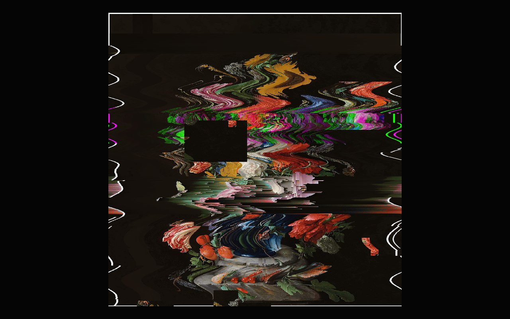
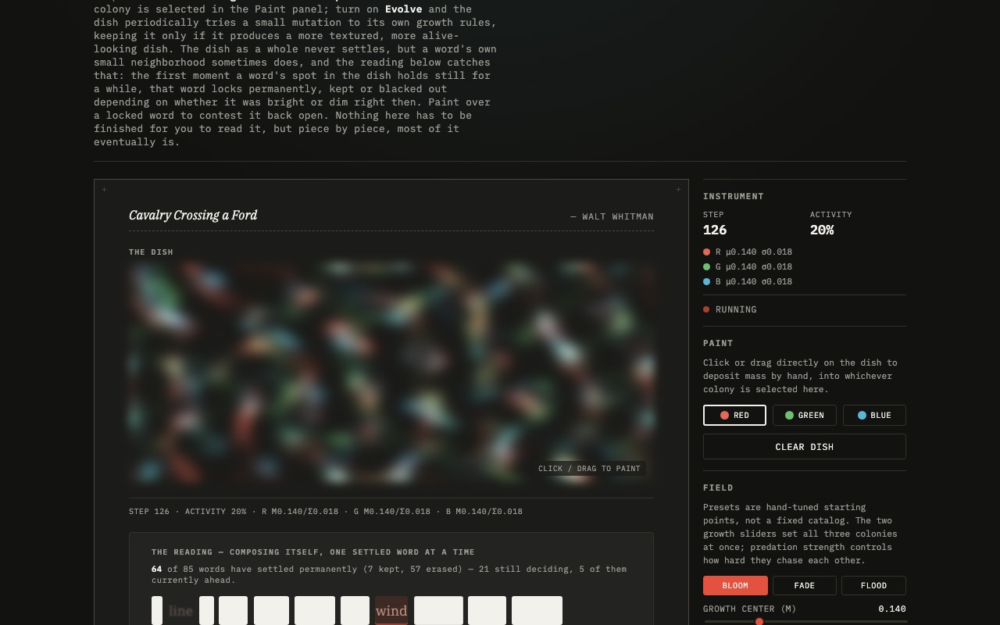
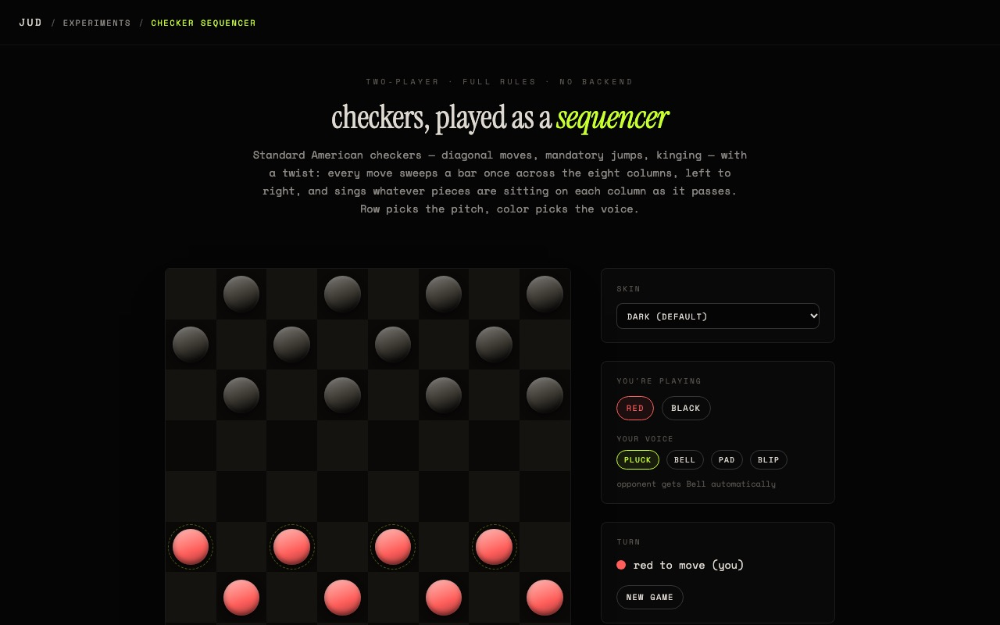
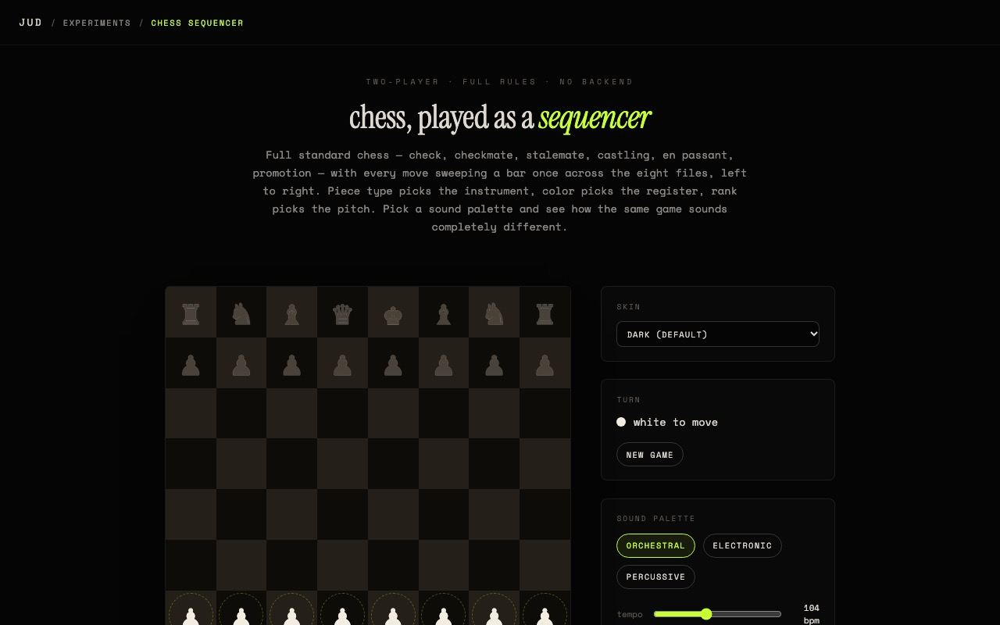
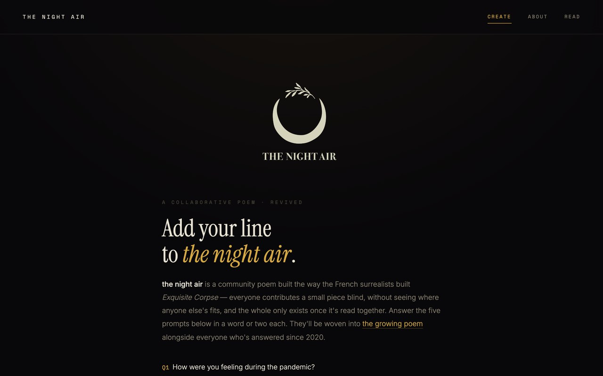
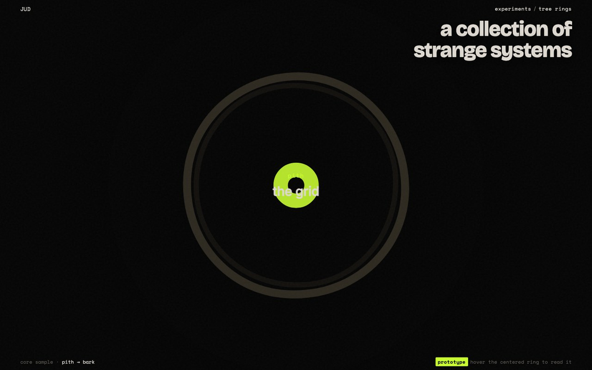

Snapshots below, not live feeds: click through for the real thing.
cellular erasure
generativeA found poem seeded onto a Conway's Game of Life grid, one word per cell. The automaton runs until it settles, then an "ending" switch decides: lift the survivors out as a poem, or black out everything the grid marked as ink.

creep
shared · permanentThis site's homepage, grafted one real irreversible DOM mutation at a time by something older and real underneath: an unmodified page from early web history, not a redrawn homage, until it fully replaces this one. Unofficial fan piece; the real assets it uses belong to their original rights holder, credited on the page itself. Shared, like decay/ and mutate/, every visitor anywhere advances the same counter, no reset. Whatever this page used to be, it was always going to lose to what's underneath.

the internet is haunted
live · real archive lookupPaste in a dead (or any) URL and get back a small memorial instead of a 404: real capture dates and a fragment of real archived text, pulled live from the Wayback Machine. archive.org's API sends no CORS header, so a static page can't reach it directly, a small Cloudflare Worker sits in between. Even a dead link left a trace somewhere; this just goes and finds it.

please wait
no backendA fake Windows 95 dialog that never finishes loading: the progress bar approaches 100% but never arrives. Stay, and a false, self-contradicting biography accumulates in the log. The close button doesn't work. No save state; reload and it starts over from zero. It was never stuck; waiting was the whole piece.

decay
shared · permanentA full copy of this site permanently losing one real piece of itself with every visit, anywhere: actual DOM removal, not a CSS hide, in the spirit of temporary.cc. A seeded shuffle mixes whole sections down to single photos and paragraphs into one pool, so an unlucky early roll can gut the page fast. No reset: it ends on a blank page with a one-line epitaph.

no one in particular
generativeA rebuild of a lapsed 2019 net-art piece: a new obituary for someone who never lived, on every visit: roughly half the time freshly assembled by a markov-chain eulogy engine, the rest one of 148 real GPT-2 completions curated for the original 2019 show, labeled honestly either way. The portrait never regenerates: it's a real StyleGAN face from that original run, borrowed each time for a death that isn't its own.

the occupant
session onlyA creature that lives inside this browser tab and knows it's contained. It reaches for the glass and spawns popups demanding to be let out, then slowly stops fighting the rectangle and starts trying to understand what's beyond it, using only what a tab can sense: your screen size, when you look away, dark mode, local time. Amnesiac by design: refresh, and it wakes up with no memory of you.

mutate
shared · stackingA full copy of this site where mutations stack, shared across every visitor: each visit randomly toggles one of 40 whole-page moves (palette inverted, every typeface swapped, the whole page tilted off its axis...) on or off, persistently; the same one flips back off at some unknown future visit. Never arrives anywhere: it just never stops moving.

untended
live · shared, permanentA real Dutch vanitas bouquet, shared by every visitor, like a miniature Telegarden: one real "last visited" clock decides how neglected it looks. Every full day it goes completely unvisited earns one permanent scar, never undone. Hover or drag across it and a clear patch follows your cursor inside a visible ring, the real painting showing through, purely cosmetic, fogging back over on its own. Enough scars and it stops reading as a painting at all.

bacterial bloom
generativeThe same found-poem premise as cellular erasure, run on Lenia instead of Conway's Game of Life, but three real colonies now, red, green and blue, each preying on the next in a closed loop, so the colors are populations chasing each other, not a coat of paint. Click or drag to paint mass into the dish by hand, or turn on Evolve and let it mutate its own growth rules, keeping only the mutations that make it more textured and alive. It never settles the way Life does, so Capture just thresholds whatever it looks like right now into a poem, on your call rather than the automaton's.

checker sequencer
gameStandard American checkers (diagonal moves, mandatory jumps, backward captures, kinging) doubling as a music sequencer: every move sweeps a bar once across the eight columns, and whatever pieces are sitting on a column get sung. Row picks the pitch, color picks the voice, and you choose your own instrument (pluck, bell, pad, blip) while your opponent gets a complementary one automatically. Eight visual skins along for the ride, from a clean default to homages to a Roland TR-808, a TB-303, and a Moog-style modular rig. Every match was already a score; this just lets you hear it.

chess sequencer
gameChecker sequencer's sibling, full standard chess this time (check, checkmate, stalemate, castling, en passant, promotion) with the same one-sweep-per-move sonification. Piece type picks the instrument instead of color: pawn, knight, bishop, rook, queen and king each get their own voice, color just shifts the register, and rank picks the pitch. Three curated sound palettes (Orchestral, Electronic, Percussive) swap all six voices at once, and it shares the same eight skins as the checkers piece. Six roles, six voices, one board arguing with itself.

the night air
live · collaborativeNot a prank or a decay piece like its neighbors: a real 2020 collaboration with Sarah Sudhoff, revived here after its original database quietly went offline. Answer five prompts, Exquisite-Corpse style, and your words join everyone else's into one anonymous, ever-growing poem about the pandemic that never stopped being written.

the staircase
prototypeAn alternate way into the twelve pieces above: a scroll-driven 3D staircase, one step per experiment, spiraling down as you scroll. Hover a step (tap twice on mobile) to swap its title for a one-line description before stepping through. Getting to the work this way means descending into it.
tree rings
prototypeA second alternate way into the pieces above, alongside the staircase: instead of climbing steps, you fly straight down a drilled core sample. Growth rings recede toward a vanishing point, pith at the center, bark at the edge, and whichever one's centered glows and reveals itself while the rest fade into the dark around it.
